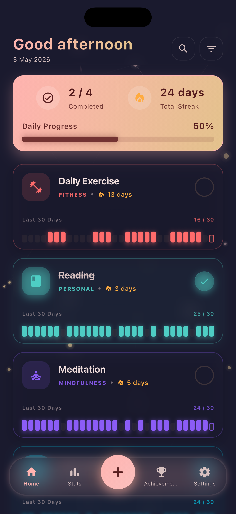
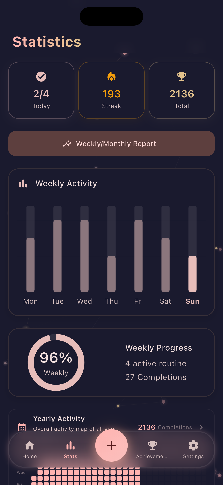
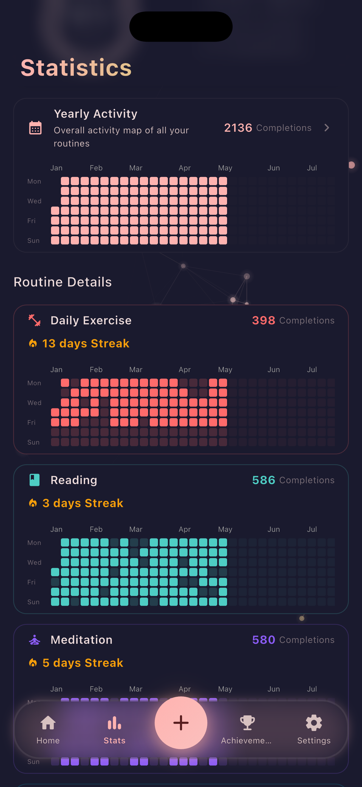
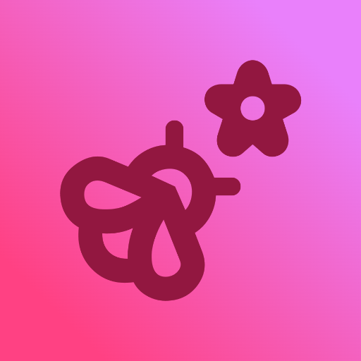

Kucuk aliskanliklar,
buyuk degisimler.
Gunluk rutinlerini takip et, aliskanliklar gelistir ve hedeflerine ulas.
Routly, gunluk rutinlerini takip etmeni, aliskanlik olusturmani ve hedeflerine ulasmani saglayan kapsamli bir rutin yonetimi uygulamasidir. Tutarli ilerlemen icin her gun seni tesvik eder.
Tutarliligi kolaylastiran araclar
Rutin olusturmaktan streak takibine kadar seni her gun motive eden ozellikler.
Gunluk Rutin
Rutinlerini olustur ve gun boyunca kolayca takip et.
Streak Takibi
Aliskanliklarini izle, serini kesintisiz buyut.
Renkli Kontrol Listesi
Gorevlerini renklerle ayir, ilerlemeni gor.
Ilerleme Istatistikleri
Raporlarla nerede oldugunu net gor.
Hatirlaticilar
Dogru zamanda bildirimlerle unutma.
Hedef Yonetimi
Hedefler belirle, adim adim ulas.
Uygulamadan gorunumler




Routly cok yakinda!
Aliskanliklarini gelistirmene yardimci olacak Routly uzerinde calisiyoruz. Gelismelerden haberdar olmak icin bizimle iletisimde kal.
Haberdar Ol